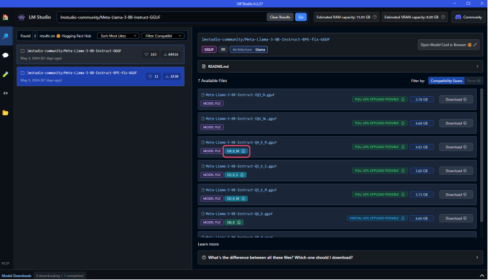
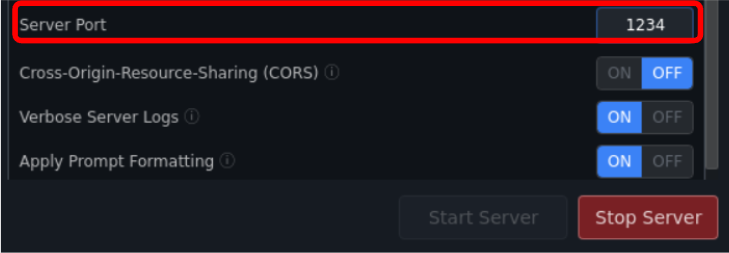

Recommended LLMs by Our Company
A list of recommended LLMs for PCs with less than 8GB or up to 8GB of GPU memory.
Recommended LLM List
microsoft/Phi-3-mini-4k-instruct-gguf
QuantFactory/Phi-3-mini-128k-instruct-GGUF
Features: Provided by Microsoft. Despite being a very small model with 3.8B (3.8 billion parameters), it has performance equivalent to models more than twice its size.
Qwen/Qwen2-0.5B -Instruct-GGUF
Qwen/Qwen2-7B-Instruct-GGUF
Features: Provided by Alibaba Cloud. It leverages training data in 27 languages in addition to English and Chinese, showing high performance in benchmarks such as natural language understanding, knowledge acquisition, coding, mathematics, and multilingual support. The 0.5B model is very small and optimal for use on low-spec PCs due to its limited knowledge capacity.
mmnga/umiyuki-Umievo-itr012-Gleipnir-7B-gguf
Features: A highly capable Japanese LLM created by integrating four models: Japanese-Starling-ChatV-7B, Ninja-v1-RP-expressive-v2, Vecteus-v1, and Japanese-Chat-Umievo-itr004-7b4.
microsoft/Phi-3-mini-4k-instruct-gguf
QuantFactory/Phi-3-mini-128k-instruct-GGUF
Features: Provided by Microsoft. Despite being a very small model with 3.8B (3.8 billion parameters), it has performance equivalent to models more than twice its size. Currently, two models supporting 4K tokens and 128K tokens are available.
Qwen/Qwen2-0.5B -Instruct-GGUF
Qwen/Qwen2-7B-Instruct-GGUF
Features: Provided by Alibaba Cloud. It leverages training data in 27 languages in addition to English and Chinese, showing high performance in benchmarks such as natural language understanding, knowledge acquisition, coding, mathematics, and multilingual support. The 0.5B model is very small and optimal for use on low-spec PCs due to its limited knowledge capacity.
mmnga/umiyuki-Umievo-itr012-Gleipnir-7B-gguf
Features: A highly capable Japanese LLM created by integrating four models: Japanese-Starling-ChatV-7B, Ninja-v1-RP-expressive-v2, Vecteus-v1, and Japanese-Chat-Umievo-itr004-7b4.
mmnga/DataPilot-ArrowPro-7B-KUJIRA-gguf
mmnga/ArrowPro-7B-KillerWhale-gguf
Features: Developed based on the open-source LLM "NTQAI/chatntq-ja-7b-v1.0" for use in AI-powered virtual YouTubers (AITubers) and AI assistants. It has high performance in Japanese and is highly rated for conversation quality. "ArrowPro-7B-KillerWhale" is positioned as an enhanced version of "DataPilot/ArrowPro-7B-KUJIRA".
lmstudio-community/gemma-2-9b-it-GGUF
Features: Built using the same architecture as Google's cutting-edge AI model Gemini, Gemma2 is lightweight yet highly performant. The 27B parameter model delivers top-notch performance in its size class, competing with models more than twice its size. The 9B parameter model also outperforms other open models of the same size.
lmstudio-community/Meta-Llama-3-8B-Instruct-GGUF
Features: Provided by Meta. Learned using about seven times the dataset of Llama2, it has rich knowledge and can handle a wide range of topics in detail. It has been improved to handle tasks such as generation and inference highly and efficiently.
mmnga/Llama-3-ELYZA-JP-8B-gguf
A Japanese-specific LLM provided by ELYZA Inc., an AI company from Professor Matsuo's Lab at the University of Tokyo. Trained with a large Japanese dataset based on Meta's Llama 3 8B-Instruct, it is familiar with Japanese grammar, vocabulary, and cultural background, accurately understanding Japanese-specific expressions and nuances, and generating refined Japanese sentences.
lmstudio-community/gemma-2-27b-it-GGUF
Features: Built using the same architecture as Google's cutting-edge AI model Gemini, Gemma2 is lightweight yet highly performant. The 27B parameter model delivers top-notch performance in its size class, competing with models more than twice its size. The 9B parameter model also outperforms other open models of the same size.
andrewcanis/c4ai-command-r-v01-GGUF
Features: Command-R is an LLM made by CohereForAI, containing 35B (35 billion) parameters. This model excels in generating text, summarizing, and answering questions based on a large amount of information. It also supports long-contexts up to 128k tokens.
pmysl/c4ai-command-r-plus-GGUF
Features: Command R+ is an enhanced version of Command R, containing 104B (104 billion) parameters. This model is designed to deliver exceptional performance for enterprise use, achieving performance close to GPT-4 Turbo while being open-source. It also supports long-contexts up to 128K tokens. (Note) About the Use of command-r-v01/Command R Plus: command-r-v01/Command R Plus is an LLM intended for non-commercial use, allowing for model modification and distribution. For commercial use, the paid API service from the provider must be used, so please be aware. The paid API can be obtained from the following site: (https://cohere.com/command)
Qwen/Qwen2-72B-Instruct-GGUF
Provided by Alibaba Cloud. Leveraging training data in 27 languages in addition to English and Chinese, it shows high performance in benchmarks such as natural language understanding, knowledge acquisition, coding, mathematics, and multilingual support. The 7B‧72B models support long-contexts up to 128K tokens.
lmstudio-community/Meta-Llama-3-70B-Instruct-GGUF
Features: Provided by Meta. Learned using about seven times the dataset of Llama2, it has rich knowledge and can handle a wide range of topics in detail. It has been improved to handle tasks such as generation and inference highly and efficiently.
Supplementary Information about Our Recommended LLMs足
When you search for recommended LLMs in LM Studio, many models may be displayed as follows.
We recommend using 4-bit quantized models, which are balanced in size and performance.
(*Specifically, models with Q4_K_M notation or similar quantization)

When Running LM Studio on a Linux Server
If you encounter the following error when trying to connect to ailia DX insight from a Linux server running LM Studio, it may be due to port access being blocked by the Linux server firewall settings.

Allow access to the port with the following command.
sudo ufw allow 1234/tcp
(*Replace the above port number "1234" with the number set in LM Studio)
